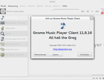
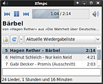
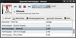
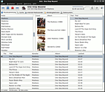
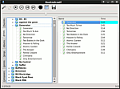
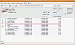
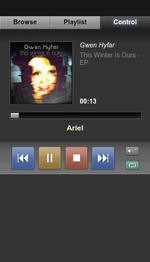
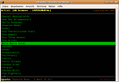

MPD
 Der Music Player Daemon
Der Music Player Daemon  (MPD) erlaubt es, über eine Netzwerkverbindung Musik in Form von MP3-, Ogg Vorbis-, FLAC-, AAC-, Mod- oder WAV-Dateien abzuspielen und die Wiedergabe über Client-Anwendungen zu steuern. Die Musik wird in einer zentralen Datenbank verwaltet und über die Soundkarte des Server abgespielt. Die Client-Rechner steuern die Ausgabe und können Abspiellisten auf dem Server verwalten. Da MPD als Sound-Ausgabe auch Streaming unterstützt, kann die Musik aber nicht nur auf dem Server, sondern auch auf anderen Rechnern (Clients) ausgegeben werden. Es liegt also ein sehr flexibles Konzept zu Grunde.
(MPD) erlaubt es, über eine Netzwerkverbindung Musik in Form von MP3-, Ogg Vorbis-, FLAC-, AAC-, Mod- oder WAV-Dateien abzuspielen und die Wiedergabe über Client-Anwendungen zu steuern. Die Musik wird in einer zentralen Datenbank verwaltet und über die Soundkarte des Server abgespielt. Die Client-Rechner steuern die Ausgabe und können Abspiellisten auf dem Server verwalten. Da MPD als Sound-Ausgabe auch Streaming unterstützt, kann die Musik aber nicht nur auf dem Server, sondern auch auf anderen Rechnern (Clients) ausgegeben werden. Es liegt also ein sehr flexibles Konzept zu Grunde.
Als Client können eigenständige Programme für verschiedene Desktop-Umgebungen und die Kommandozeile genutzt werden, die an herkömmliche Audio-Player erinnern. Aber auch Webfrontends und Anwendungen für Pocket-PCs oder Mobiltelefone sind verfügbar. Dadurch kann man die Musik, die aktuell über MPD abgespielt wird, von allen Rechnern im Haus steuern.
Server¶
In einem eigenständigen Artikel wird die Installation und Einrichtung des MPD-Servers erklärt. Die Einrichtung auf der Benutzerebene, mit der die Einbindung mit PulseAudio wesentlich einfacher vonstatten geht, wird in MPD auf der Benutzerebene beschrieben.
Clients¶
Den Server kann man durch die verschiedensten Clients steuern. Es gibt sowohl Clients für diverse grafische Oberflächen als auch webbasierte Clients und Clients für die Kommandozeile. Eine Auswahl wird im Anschluss vorgestellt, eine ausführliche Auflistung ist im MPD Wiki zu finden.
GTK¶
Es gibt eine Vielzahl von GTK-Clients für MPD. Darunter spezielle für GNOME und Xfce, aber auch solche ohne Abhängigkeit von einer bestimmten Desktop-Umgebung.
|  |
| GMPC |
GMPC (Gnome Music Player Client)¶
Der GNOME Music Player Client ähnelt Amarok, Rhythmbox oder pympd. Mit GMPC kann man auf verschiedene Arten sein Musikarchiv durchforsten und Musik zur Wiedergabeliste hinzufügen. Man kann sein Archiv so durchsuchen, wie es auf der Festplatte abgelegt ist, oder die Datenbank mittels mehrerer hintereinander folgenden Suchabfragen durchsuchen oder die Genre- oder Künstlerbrowser benutzen, die stark an Rhythmbox erinnern.
Zusätzlich gibt es einen Metadatenbrowser, bei den man sich Daten wie die Gesamtspielzeit der Musik einer Band ansehen kann oder sich alle Alben auflisten lassen kann. GMPC lässt sich mit Plugins erweitern, welche beispielsweise die Albencover und Bandfotos von der Festplatte, Amazon oder Last.fm laden können.
Weitere Informationen hält der Artikel zum GNOME Music Player Client bereit.
|  |
| Xfmpc |
Xfmpc (Xfce Music Player Client)¶
Der Xfce Music Player Client ist ein schlankes Programm speziell für den Xfce-Desktop. Der funktionsreiche Client bietet eine kompakte Oberfläche mit den grundlegenden Elementen zur Steuerung des MPD. Einige weitergehende Konfigurationen des MPD, zum Beispiel die Steuerung der Ausgabe-Methoden, sind nicht möglich.
Es kann bis einschließlich Ubuntu 12.04 über die Paketverwaltung installiert werden. Bei neueren Ubuntu-Versionen muss man die Anwendung zuerst aus dem Quelltext übersetzen. Details sind im Artikel Xfce Music Player Client/Kompilieren zu finden.
Sonata¶
|  |
| Sonata |
Sonata ist ein schlanker GTK+-Client. Das in Python geschriebene Programm bietet alle typischen Funktionen eines Music Player Client und darüber hinaus weitere Eigenschaften eines modernen Audio-Players, wie Cover- und Liedtext-Anzeige und ID-Tag-Bearbeitung.
Das Programm ist kompakt aber übersichtlich und intuitiv zu bedienen, und die Anzeige ist individuell einstellbar. Die Installation erfolgt über die Paketverwaltung.
Mehr Informationen bietet der Artikel zu Sonata.
Ario¶
|  |
| Ario |
Ario ist ein mächtiger, aber schneller GTK+-Client. Das in C geschriebene Programm bietet alle Funktionen eines Music Player Client und darüber hinaus weitere Eigenschaften eines modernen Audio-Players, wie Internetradio-Unterstützung und Cover- und Liedtext-Anzeige. Zudem bietet Ario experimentelle Unterstützung für XMMS2, wozu man Ario allerdings selbst kompilieren muss.
Das Programm ist übersichtlich und intuitiv zu bedienen, und die Anzeige ist individuell einstellbar. Die Installation erfolgt über die Paketverwaltung, sofern man Ario nicht selbst kompiliert.
Mehr Informationen bieten die Artikel zu Ario und zum Kompilieren von Ario.
Qt¶
Cantata¶
Cantata ist ein relativ junger plattformübergreifender Client, der als Abspaltung von QtMPC entstanden ist.
cantata (ppa)
 mit apturl
mit apturl
Paketliste zum Kopieren:
sudo apt-get install cantata
sudo aptitude install cantata
|  |
| Quetzalcoatl |
Quetzalcoatl¶
Das Programm bietet die typischen Funktionen eines MPD-Client und stellt die MPD-Datenbank übersichtlich nach verschiedenen Bereichen der ID-Tags dar. Die Installation muss manuell erfolgen.
Weitere Informationen beinhaltet der Artikel Quetzalcoatl.
Webfrontends¶
Ein Webfrontend ist natürlich optimal für den Betrieb eines MPD-Server. Der größte Vorteil ist sicherlich, dass MPD ohne die Installation einer Software auf Client-Seite gesteuert werden kann – einen Browser vorausgesetzt.
|  |
| Patchfork |
Patchfork¶
Patchfork ist eine moderne Webanwendung mit PHP- und AJAX-Elementen. So ist die Oberfläche schnell und funktional.
Die Anwendung ist ein Fork von Pitchfork mit "i", dass nicht mehr weiterentwickelt wird.
Patchfork muss auf einem Rechner mit Apache als Webserver und PHP5 installiert sein, wobei der Rechner, auf dem Patchfork läuft, nicht zwangsläufig der selbe Rechner sein muss, auf dem MPD als Dienst installiert ist.
|  |
| NeoMPC |

Kommandozeile¶
mpc¶
mpc (universe) - Ist der Standard CLI-Client für MPD, sehr nützlich zum Einbinden in eigene Skripte.
|  |
| ncmpc |
ncmpc¶
ncmpc ist ein auf ncurses basierender Client für den MPD. Für Konsolen-Cowboys ist MPD im Zusammenspiel mit einem Kommandozeilen-Client interessant, selbst wenn die Netzwerkfunktionalität von MPD nicht genutzt wird. MPD plus Client stellt einen mächtigen Audio-Player für die Konsole dar. Ein Vorteil ist beispielsweise, dass man den Client startet, die Playliste zusammenstellt und dann den Client wieder beenden kann. MPD spielt danach im Hintergrund weiterhin Musik ab. Das Programm kann über die Paketverwaltung installiert werden.
Weiter Informationen enthält der Artikel ncmpc.
Weitere MPD-Clients¶
Hier werden einige weitere Clients aufgeführt, vornehmlich solche, die über die Paketquellen installiert werden können. Eine komplette Auflistung findet man auf unter MPD-Clients .
glurp
(universe) - Auf GTK2.4+ basierender Client mpdcon.app (universe) - Applet für den Windowmaker
xfce4-mpc-plugin
(universe) - Xfce-Panel-Pluginpygmy (universe) - GTK-Client, Programm wird vom Entwickler seit längerer Zeit nicht gepflegt, ist aber in den Paketquellen und benutzbar
pymp'd
- GTK-Client, Programm wird vom Entwickler seit längerer Zeit nicht gepflegt, ist aber als pympd (universe) in den Paketquellen und benutzbar
Systemmonitore¶
Der Systemmonitor Conky kann MPD-Informationen anzeigen. Dies ist unter MPD-Anzeige mit Conky beschrieben. Auch für GKrellM existiert ein entsprechendes Paket: GKrellMPC.
Scrobbeln mit MPD¶
Zum Übertragen der Titelinformationen zu Musikdiensten im Internet (lastfm, libre.fm, Jamendo) kann mpdscribble verwendet werden. Details in Artikel mpdscribble.
MPD und andere Betriebssysteme¶
Die Portierung des GNOME Music Player Client bietet eine komfortable Möglichkeit, den MPD unter anderen Betriebssystemen (wie zum Beispiel Microsoft Windows) zu steuern. Dazu findet man in den Installations-Anleitungen auf der Projekt-Seite weitere Informationen. Android-Benutzer können z.B. den MPDroid oder den Droid MPD Client  zum Steuern des MPD verwenden. Ersterer kann auch direkt den Stream wiedergeben.
zum Steuern des MPD verwenden. Ersterer kann auch direkt den Stream wiedergeben.
 Übersichtsartikel
Übersichtsartikel- Erstellt mit Inyoka
-
 2004 – 2017 ubuntuusers.de • Einige Rechte vorbehalten
2004 – 2017 ubuntuusers.de • Einige Rechte vorbehalten
Lizenz • Kontakt • Datenschutz • Impressum • Serverstatus -
Serverhousing gespendet von